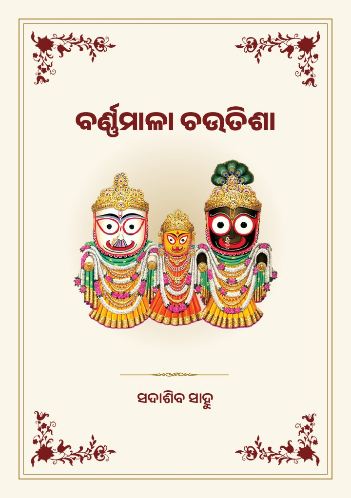
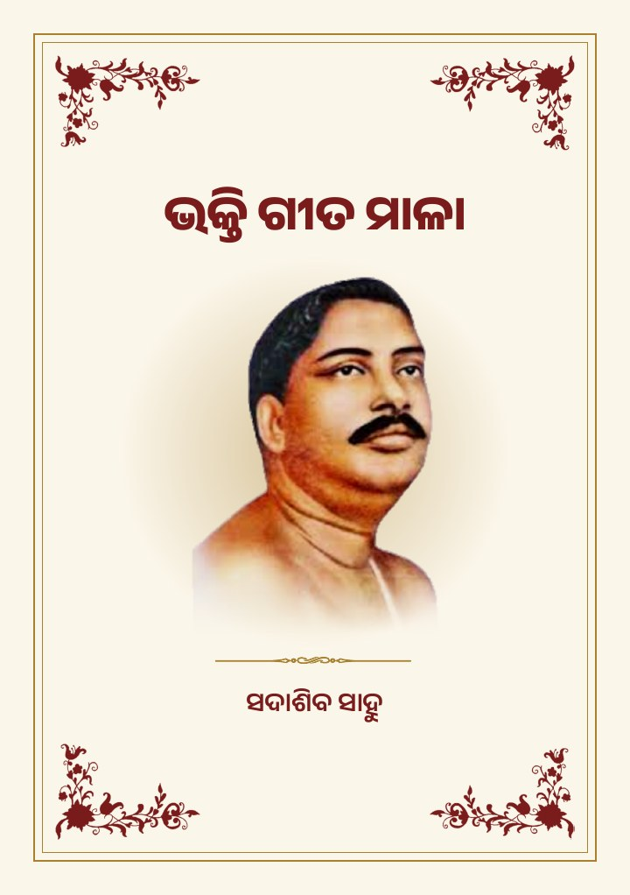

ବର୍ଣ୍ଣମାଳା ଚଉତିଶା
Barnamala Choutisha
ଓଡ଼ିଆ ବର୍ଣ୍ଣମାଳାର ଗୋଟିଏ ଗୋଟିଏ ଅକ୍ଷରରୁ ଆରମ୍ଭ ହେଉଥିବା ୪୮ଟି ପଦର ଭକ୍ତି ଚଉତିଶା।
A devotional choutisha of 48 stanzas, each beginning with a letter of the Odia alphabet.
Sadashib Sahoo
କବି ଓ ଭକ୍ତି ଗୀତର ଗାୟକ Odia poet and singer of devotional songs
ସଦାଶିବ ସାହୁଙ୍କ ଜନ୍ମ 1942 ମସିହା ଅଗଷ୍ଟ ମାସରେ ନିଆଳ (ମଲ୍ଲିପୁର) ରେ ହୋଇଥିଲା | ଶିକ୍ଷା ଆରମ୍ଭ ପ୍ରଥମେ ଗେଲ୍ଲି ନାନୀ ଚାଟଶାଳୀରେ ହୋଇଥିଲା | ପରେ ନିଆଳ ନିମ୍ନ ପ୍ରାଥମିକ ବିଦ୍ୟାଳୟରେ ପ୍ରଥମ ଶ୍ରେଣୀରେ ଯୋଗଦାନ କରିଲେ | ତୃତୀୟ ଶ୍ରେଣୀ ଉତ୍ତୀର୍ଣ୍ଣ ହେବା ପରେ ହଳଦିଆ ମଧ୍ୟ ଇଂରାଜୀ ବିଦ୍ୟାଳୟରେ ମାଇଂନର ପାସ କରି ଖୋର୍ଦ୍ଧା ବକ୍ଶି ଜଗବନ୍ଧୁ ବିଦ୍ୟାଧର ଉଚ୍ଚ ଇଂରାଜୀ ବିଦ୍ୟାଳୟ ରେ ଏକାଦଶ ଶ୍ରେଣୀ (H.S.C.E .) ପାସ କରି ଦରିଦ୍ରତା କଷାଘାତରେ ଉଚ୍ଚ ଶିକ୍ଷା ଅଧ୍ୟୟନ କରିବା ସମ୍ଭବ ହୋଇପାରି ନଥିଲା | 1960 ମସିହା ଜୁଲାଇ ମାସରେ ବାଙ୍କୀ ସୁବର୍ଣ୍ଣପୁର ମଧ୍ୟ ଇଂରାଜୀ ବିଧ୍ୟାଳୟରେ ଏକ ବର୍ଷ ପାଇଁ ଶିକ୍ଷକତା କରିଥିଲେ| ତତ୍ପରେ ଭୁବନେଶ୍ୱରସ୍ଥ ଖଦି ଗ୍ରାମୋଦ୍ୟଗ ବିଦ୍ୟାଳୟରେ “ଖଦି ଗ୍ରାମୋଦ୍ୟଗ କାର୍ଯ୍ୟକର୍ତ୍ତା” ପାଠ୍ୟକ୍ରମରେ ସଫଳତା ର ସହିତ ଉତ୍ତୀର୍ଣ୍ଣ ହୋଇ ଖଦି ଗ୍ରାମୋଦ୍ୟଗ କମିଶନଙ୍କ ଦ୍ୱାରା ଆୟୋଜିତ ଗ୍ରାମ ସ୍ଵରାଜ୍ୟ ବିଦ୍ୟାଳୟ ରାୟଗଡା ଜିଲ୍ଲାର ଗୋପାଳବାଡ଼ି ଠାରେ ଦୁଇ ବର୍ଷୀୟା ଗ୍ରାମ ସହାୟକ ତାଲିମ୍ କେନ୍ଦ୍ରରେ ତାଲିମ୍ ନେବା ପାଇଁ ରାଜ୍ୟ ଖଦି ଓ ଗ୍ରାମୋଦ୍ୟଗ ବୋର୍ଡ଼ ଗ୍ରାମ ସହାୟକ ରୂପେ ନିଯୁକ୍ତି ଦେଇଥିଲେ | ସେଠାରୁ ସଫଳତା ର ସହିତ ଉତ୍ତୀର୍ଣ୍ଣ ହେବା ସଂଗେ ସଂଗେ କଳାହାଣ୍ଡି ଜିଲ୍ଲା ଧର୍ମଗଡ଼ ବ୍ଲକର ପର୍ଲ୍ଲା, ନୟାଗଡ଼ ବ୍ଲକର ଚମ୍ପତ୍ତିପୁର, ଲେଙ୍କୁଡ଼ିପଡ଼ା ଠାରେ ଗ୍ରାମ ସହାୟକ ରୂପେ କାର୍ଯ୍ୟ କରିଥିଲେ | ଏଇ ଯୋଜନାଟି ଖଦି ଗ୍ରାମୋଦ୍ୟଗ କମିଶନରଙ୍କର ଥିବାରୁ ତତ୍କାଳୀନ କେନ୍ଦ୍ର ସରକାର ଏହି ଯୋଜନାକୁ ଉଛେଦ କରିଦେବାରୁ ତାଙ୍କର କର୍ମଚ୍ୟୁତି ଘଟିଥିଲା | ତତ୍ପରେ ରାଜ୍ୟ ସରକାରଙ୍କ ଶିଳ୍ପ ନିର୍ଦେଶାଳୟ ତାଙ୍କର ଯୋଗ୍ୟତା, ଅନୁଭୂତି ଓ ଦକ୍ଷତାକୁ ବିଚାର କରି ଶିଳ୍ପ ସମ୍ପ୍ରସାରଣ ଅଧିକାରୀ ହିସାବରେ ନିଯୁକ୍ତି ଦେଇ ଜିଲ୍ଲା ଶିଳ୍ପ କାର୍ଯ୍ୟାଳୟ କୋରାପୁଟ-ଜୟପୁରଠାରେ ମୁତୟନ କରିଥିଲେ | ସେଠାରେ ଏକ ବର୍ଷ କାର୍ଯ୍ୟ କରିବା ପରେ ହାଇଦ୍ରାବାଦ ସ୍ଥିତ ଶିଳ୍ପ ସମ୍ପ୍ରସାରଣ ଅଧିକାରୀ ତାଲିମ୍ କେନ୍ଦ୍ରରେ ଏକ ବର୍ଷ ତାଲିମ୍ ନେବାକୁ ପଡିଥିଲା | ତତ୍ପରେ ରାୟଗଡାର କଲ୍ୟାଣସିଂହପୁର ବ୍ଳକରେ ଶିଳ୍ପ ସମ୍ପ୍ରସାରଣ ଅଧିକାରୀ ରୂପେ ନିଯୁକ୍ତି ମିଳିଥିଲା | ଓଡ଼ିଶାରେ ସ୍ୱତନ୍ତ୍ର ଓ ଜନ କଂଗ୍ରେସ ସରକାର ଥିବା ବେଳେ ଖର୍ଚ୍ଚକାଟ ଯୋଜନାକୁ କାର୍ଯ୍ୟକାରୀ କରିବା ପାଇଁ ପ୍ରତ୍ୟେକ ବିଭାଗରୁ କିଛି କିଛି ପଦବୀ ସଂକୁଚିତ କରାଗଲା ସେହି ଯୋଜନାରେ ତାଙ୍କର କର୍ମଚ୍ୟୁତି ଘଟିଥିଲା | ତତ୍ପରେ ରାଜ୍ୟ ସରକାର ପୁନର୍ବିଚାର କରି କର୍ମଚ୍ୟୁତି ଘଟିଥିବା ଶିଳ୍ପ ବିଭାଗର କର୍ମଚାରୀଙ୍କୁ ଖାଲି ଥିବା ବିଭିନ୍ନ ପଦ ପଦବୀରେ ପର୍ଯାୟକ୍ରମେ ନିଯୁକ୍ତି ଦେଇଥିଲେ | ତାଙ୍କୁ ପ୍ରଥମେ Junior Inspector ପରେ Coir Supervisor ରୂପେ ଶିଳ୍ପ ନିର୍ଦେଶାଳୟରେ ମୁତୟନ କରିଥିଲେ | ଇତିମଧ୍ୟରେ କେରଳରେ Coir Board ଦ୍ୱାରା ପରିଚାଳିତ ହେଉଥିବା N.C.T. & D.C., Alleppey କତା ଶିଳ୍ପର ଏକ ବର୍ଷୀୟା “Advance Course” ରେ ତାଲିମ୍ ନେଇଥିଲେ | ରାଜ୍ୟ ସରକାର ଓଡ଼ିଶାରେ କତା ଶିଳ୍ପର ବିକାଶପାଇଁ ପୁରୀ ଜିଲ୍ଲାର ତେଇଶିପୁର ଠାରେ "ରାଜ୍ୟ କତା ଶିଳ୍ପ ତାଲିମ୍ ତଥା ରୁପାଙ୍କନ କେନ୍ଦ୍ର” ପ୍ରତିଷ୍ଠା କରିଥିଲେ | ସେଠାରେ ତାର ପରିଚାଳନା ନିମନ୍ତେ ପ୍ରଥମ Superintendent ରୂପେ ଯୋଗଦାନ କରିଥିଲେ | ଓଡ଼ିଶାର ବିଭିନ୍ନ ଜିଲ୍ଲାରୁ ଆସିଥିବା ଶିକ୍ଷା ନବୀଶମାନଙ୍କୁ କତା ଶିଳ୍ପର “Advance Course” ରେ ତାଲିମ୍ ଦିଆଗଲା | ତାଙ୍କର କାର୍ଯ୍ୟରେ ବହୁ ପ୍ରଶଂଶାପତ୍ର ବିଭିନ୍ନ ଉଚ୍ଚପଦସ୍ଥମାନଙ୍କ ଠାରୁ ମିଳିଥିଲା |
1984 ମସିହାରୁ 1988 ମସିହା ପର୍ଯ୍ୟନ୍ତ ‘Odisha Maritime Chilika Area Development Corporation’ କୁ ଡେପୁଟେସନରେ ଯାଇ ସାକ୍ଷୀଗୋପାଳ ସ୍ଥିତ ‘Coconut Industrial Complex’ ରେ ସହକାରୀ ପ୍ରକଳ୍ପ ଅଧିକାରୀ ପରେ ପ୍ରକଳ୍ପ ଅଧିକାରୀ ଭାବରେ କାର୍ଯ୍ୟ କରିଥିଲେ | ସେଠାରେ ପରୀକ୍ଷାମୂଳକ ଭାବରେ ନାରିକେଳର ପ୍ରତ୍ୟେକ ଅଂଶକୁ ଶିଳ୍ପଗତ ବିନିଯୋଗ କରି କତା ପାରୁ , ନଡ଼ିଆ ଶଶ (Copra) , ନଡ଼ିଆ ତେଲ , ସଢ଼େଇ ଗୁଣ୍ଡ ଏବଂ କତା ରଶି ଉତ୍ପାଦନ କରିଥିଲେ | ଏହାର ମୂଳ କଂଚାମାଲ ପାକଳ ନଡ଼ିଆ କିଣିବାର ପଦ୍ଧତିକୁ ନିଷ୍ପତି ନେବାରେ ବହୁ ବିଳମ୍ବ ଘଟିବାରୁ ଶିଳ୍ପାଂଚଳଟି ବହୁତ ଦିନଧରି ଅଚଳ ହୋଇ ରହିଲା | ସେତେବେଳେ ଓଡ଼ିଶାରେ କତା ପାରୁର ଚାହିଦା ଥିବାରୁ ସାକ୍ଷୀଗୋପାଳ ନଡ଼ିଆ ଗୋଦାମମାନଙ୍କରୁ କତା (Husk) ସଂଗ୍ରହ କରି କେବଳ ପାରୁ ଉତ୍ପାଦନ (Defibering) ଆରମ୍ଭ କରିଥିଲେ | ଏହା ଦ୍ୱାରା ଓଡିଶାର ଛୋଟ ଛୋଟ କତା ଶିଳ୍ପ ମାନଙ୍କର କତା ପାରୁର ଚାହିଦା ପୂରଣ କରାଯାଇ ପାରିଥିଲା | ଏହାର ପ୍ରଭାବରେ ଓଡ଼ିଶାରେ ଘରୋଇ ଭାବରେ ବହୁ Defibering Units ପ୍ରତିଷ୍ଠା ହୋଇପାରିଥିଲା |
କେନ୍ଦ୍ର ସରକାର ଭୁବନେଶ୍ୱରଠାରେ ପୂର୍ବ ଭାରତରେ କତା ଶିଳ୍ପର ବିକାଶ ନିମିତ୍ତ ‘Regional Coir Training and Development Centre’ ପ୍ରତିଷ୍ଠା କରିଥିଲେ | ସର୍ବ ଭାରତୀୟ Coir Board ର ନିବେଦନରେ ଓଡିଶା ରାଜ୍ୟ ସରକାର ଛଅ ବର୍ଷ ପାଇଁ (1992-1998) ଉକ୍ତ କେନ୍ଦ୍ରରେ Deputy Regional Coir Development Officer ଭାବରେ ମୁତୟନ ହୋଇଥିଲେ| ସେଠାରେ ସଫଳତାର ସହିତ କାର୍ଯ୍ୟ କରି ବହୁ ପ୍ରଶଂସିତ ହୋଇଥିଲେ |ତତ୍ପରେ ସେଠାରୁ ବିଦାୟ ନେଇ ରାଜ୍ୟ ଶିଳ୍ପ ନିର୍ଦେଶାଳୟରେ କତା ଶିଳ୍ପ ବିଷାରଦ ଭାବରେ ଅବସ୍ଥାନ କରିଥିଲେ| ରାଜ୍ୟ ସରକାର ସହକାରୀ କତା ଶିଳ୍ପ ନିର୍ଦେଶକ ପଦବୀ କୁ ଉନ୍ନୀତ କରିଥିଲେ | 2000 ମସିହା ଜୁନ 30 ତାରିଖରେ ଅବସର ଗ୍ରହଣ କରିଥିଲେ | କବି ବର୍ତମାନ ଶ୍ୟାମପୁର ସ୍ଥିତ ବିଶୁଦ୍ଧାନନ୍ଦ ନଗର, ଭୁବନେଶ୍ୱରରେ ଅବସ୍ଥାନ କରୁଛନ୍ତି|
ଶ୍ରୀ ସଦାଶିବ ସାହୁ ଜୀବନରେ ଗୁରୁ ଗ୍ରହଣ କରିବା ପାଇଁ ବିଭିନ୍ନ ଆଧ୍ୟାତ୍ମିକ ସଂସ୍ଥାର ସତସଙ୍ଗମାନଙ୍କୁ ଯାଉଥିଲେ କିନ୍ତୁ ସେଠାରେ ଭକ୍ତ ମାନଙ୍କର ଚାଲି ଚଲଣ ଦେଖି ତାଙ୍କର ଦୀକ୍ଷା ଗ୍ରହଣ କରିବା ପାଇଁ ମନ ମାନି ନଥିଲା | 1979 ମସିହା ରେ ଦେଓଘର ଠାରେ ଅନୁଷ୍ଠିତ ହେଉଥିବା ପୂଜା ଉତ୍ସବରେ ଯୋଗଦାନ କରିବା ପାଇଁ ବହୁ ଗୁରୁ ଭାଇ Reserve Bus ରେ ଯାଉଥିଲେ | କିଛି ଗୁରୁ ଭାଇଙ୍କ ପରାମର୍ଶରେ ତାଙ୍କ ସଂଗେ ଦେଓଘର ଯାଇଥିଲେ | ସେଠାକାର ପରିବେଶରେ ମୁଗ୍ଧ ହୋଇ ଶ୍ରୀ ଶ୍ରୀ ବଡ଼-ଦାଙ୍କ ଅନୁମତି କ୍ରମେ ଋତ୍ତ୍ଵିକ ଶ୍ରୀ ପୂର୍ଣ୍ଣଚନ୍ଦ୍ର ନାୟକଙ୍କ ମାଧ୍ୟମରେ ଶ୍ରୀ ଶ୍ରୀ ଠାକୁର ଅନୂକୁଳଚନ୍ଦ୍ରଙ୍କୁ ତା. 04/10/1979 .ରିଖ ରେ ଗୁରୁ ରୂପେ ଗ୍ରହଣ କରିଥିଲେ | ତତ୍ପରେ 1984 ମସିହାରେ ସ୍ୱସ୍ତୟନୀ ବ୍ରତ ଗ୍ରହଣ କରିଥିଲେ | ସେହି ଦିନ ଠାରୁ ଶ୍ରୀ ଶ୍ରୀ ଠାକୁରଙ୍କୁ ଜୀବନରେ ଧରି ଚାଲିଛନ୍ତି ||
Sadashib Sahoo was born in August 1942 in Niala (Mallipur), Odisha. Difficult circumstances ended his studies after the H.S.C.E., and from July 1960 he taught for a year at the M.E. school in Banki Subarnapur. He then trained in Khadi and village industries, worked as a Gram Sahayak, and joined the state Directorate of Industries as an industries extension officer.
Most of his working life was given to Odisha’s coir industry: as Junior Inspector and Coir Supervisor, after an advanced course run by the Coir Board in Kerala; as the first Superintendent of the State Coir Training and Design Centre at Teisipur, Puri; from 1984 to 1988 at the Coconut Industrial Complex in Sakhigopal; and from 1992 to 1998 as Deputy Regional Coir Development Officer at the Regional Coir Training and Development Centre in Bhubaneswar. He retired on 30 June 2000 as Assistant Director of Coir Industry, and lives in Bishuddhananda Nagar, Shyampur, Bhubaneswar.
On 4 October 1979, at Deoghar, he took Sri Sri Thakur Anukulchandra as his guru, and in 1984 he took the Swastyayani vow. His devotional poems and songs grew out of this lifelong practice.

Barnamala Choutisha
ଓଡ଼ିଆ ବର୍ଣ୍ଣମାଳାର ଗୋଟିଏ ଗୋଟିଏ ଅକ୍ଷରରୁ ଆରମ୍ଭ ହେଉଥିବା ୪୮ଟି ପଦର ଭକ୍ତି ଚଉତିଶା।
A devotional choutisha of 48 stanzas, each beginning with a letter of the Odia alphabet.

Bhakti Geet Mala
ପ୍ରାର୍ଥନା, ଭଜନ ଓ କୀର୍ତ୍ତନର ୨୬ଟି ଭକ୍ତି ଗୀତ।
26 devotional songs: prayers, bhajans and kirtans. Eleven of them carry QR codes that open their recordings.
To print a booklet: print the A4 file at 100% (“Actual size”), double-sided, “Flip on short edge”. Keep the sheets in order, fold them in the middle and staple along the fold.
ତାଙ୍କ ୟୁଟ୍ୟୁବ୍ ଚ୍ୟାନେଲରୁ From his YouTube channel. Select a song to play it here.
ବର୍ଣ୍ଣମାଳା ଚଉତିଶା
ବର୍ଣ୍ଣମାଳା ଚଉତିଶା, କବିଙ୍କ ନିଜ କଣ୍ଠରେ
YouTube ରେ ଖୋଲନ୍ତୁପ୍ରାର୍ଥନା: ହେ ଠାକୁର ତୁମେ ମୋର …
ଭକ୍ତି ଗୀତ ମାଳା, ଗୀତ ୧
YouTube ରେ ଖୋଲନ୍ତୁଭଜନ : ଜୟ ଜୟ ଜୟ ଜୟ ରାଧା ସ୍ୱାମୀ…
ଭକ୍ତି ଗୀତ ମାଳା, ଗୀତ ୨
YouTube ରେ ଖୋଲନ୍ତୁଭଜନ : ତାଙ୍କୁ ଜାଣି ରଖି ଥାଅ ଗୋ …
ଭକ୍ତି ଗୀତ ମାଳା, ଗୀତ ୩
YouTube ରେ ଖୋଲନ୍ତୁକୀର୍ତ୍ତନ : ତୁମ ନାମ ତୁମ ପ୍ରେମ …
ଭକ୍ତି ଗୀତ ମାଳା, ଗୀତ ୪
YouTube ରେ ଖୋଲନ୍ତୁଭଜନ : ଶ୍ରୀ ଶ୍ରୀ ଠାକୁରଙ୍କ ଜନ୍ମ ବୃତାନ୍ତ
ଭକ୍ତି ଗୀତ ମାଳା, ଗୀତ ୫
YouTube ରେ ଖୋଲନ୍ତୁଭଜନ: ଶ୍ରୀ ଶ୍ରୀ ଲକ୍ଷ୍ମୀ ମାଙ୍କ ଜନ୍ମ ବୃତାନ୍ତ
ଭକ୍ତି ଗୀତ ମାଳା, ଗୀତ ୬
YouTube ରେ ଖୋଲନ୍ତୁଭଜନ : ଜୟ ଜୟ ରାଧା ସ୍ୱାମୀ , ଜୟ ଅନୁକୂଳ …
ଭକ୍ତି ଗୀତ ମାଳା, ଗୀତ ୭
YouTube ରେ ଖୋଲନ୍ତୁକୀର୍ତ୍ତନ : ଭଜ ଦେଓଘର ଗୋସାଇଁ …
ଭକ୍ତି ଗୀତ ମାଳା, ଗୀତ ୮
YouTube ରେ ଖୋଲନ୍ତୁକୀର୍ତ୍ତନ : ହରି ବୋଲ , ହରି ବୋଲ …
ଭକ୍ତି ଗୀତ ମାଳା, ଗୀତ ୯
YouTube ରେ ଖୋଲନ୍ତୁଭଜନ : ଭଜ ଭଜ ଭଜ ମନରେ ଭଜ ଶ୍ରୀ ଅନୁକୂଳ
ଭକ୍ତି ଗୀତ ମାଳା, ଗୀତ ୧୦
YouTube ରେ ଖୋଲନ୍ତୁଭଜନ :କୃପା ସିନ୍ଧୁ ଦଇତାରୀ
ଭକ୍ତି ଗୀତ ମାଳା, ଗୀତ ୧୧
YouTube ରେ ଖୋଲନ୍ତୁYouTube @sadashibsahoogeet
ପ୍ରଭୁ ଜଗନ୍ନାଥ ଓ ଶ୍ରୀ ଶ୍ରୀ ଠାକୁର ଅନୁକୂଳଚନ୍ଦ୍ରଙ୍କ ଉଦ୍ଦେଶ୍ୟରେ ଭଜନ ଓ କୀର୍ତ୍ତନ। Bhajans and kirtans devoted to Lord Jagannath and Sri Sri Thakur Anukulchandra.